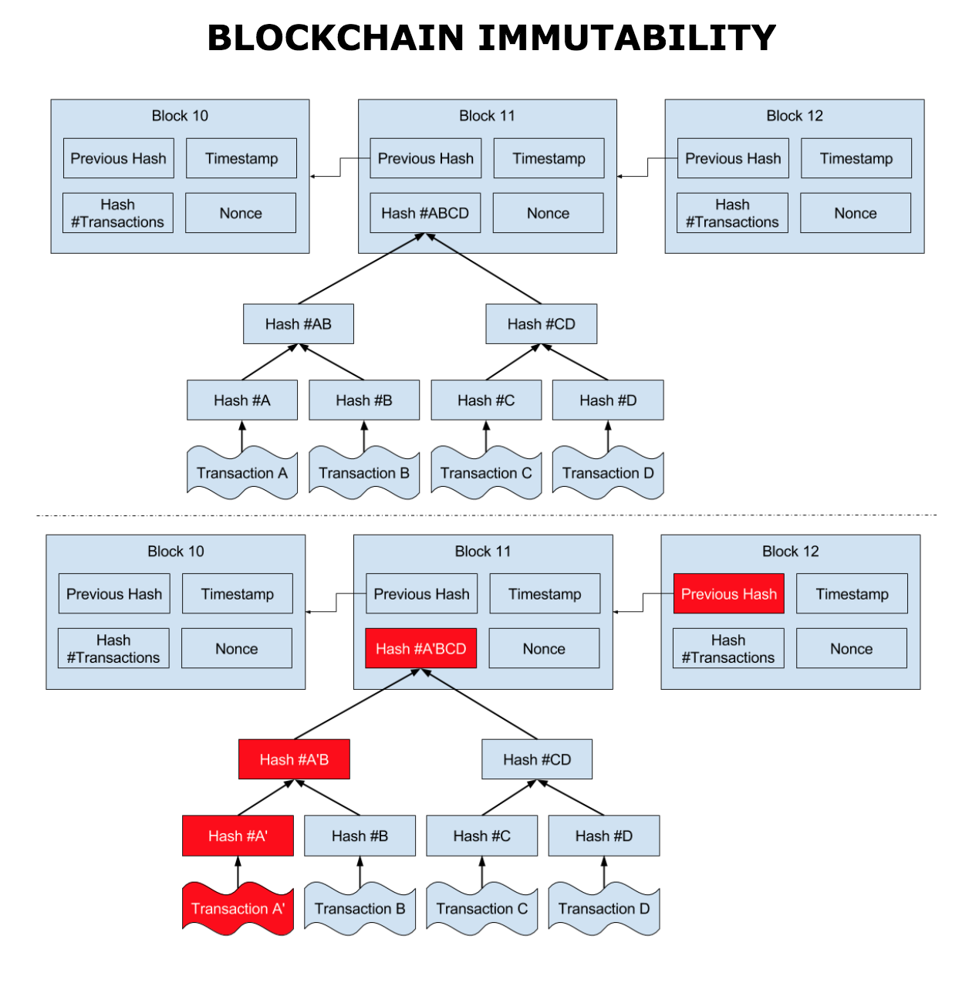

notes
Table of Contents
- 1. Course Learning Objectives
- 2. Hyperledger
- 3. The Linux Foundation
- 4. Chapter 1. Discovering Blockchain Technologies
- 4.1. Distributed Ledger Technology (DLT)
- 4.1.1. Background - The Rising Interest in Distributed Ledger Technologies
- 4.1.2. Distributed Ledger Technology (DLT)
- 4.1.3. Blockchains
- 4.1.4. Merkle Tree
- 4.1.5. Transactions
- 4.1.6. Differences between Blockchains and Databases
- 4.1.7. Types of Blockchains
- 4.1.8. Peer-to-Peer Network Architecture
- 4.1.9. Immutability of Data
- 4.1.10. Blockchain Applications
- 4.1.11. Smart Contracts
- 4.1.12. Bitcoin - A Popular Blockchain Deployment
- 4.1.13. Bitcoin and Cryptoeconomics
- 4.1.14. Ethereum - An Alternative to Bitcoin
- 4.1.15. Dapps
- 4.1. Distributed Ledger Technology (DLT)
1 Course Learning Objectives
By taking this course, you will be able to:
- Describe Business Blockchain and Distributed Ledger Technologies.
- Gain familiarity with current Hyperledger projects and cross-industry use cases.
- Perform clean installations of the Hyperledger Sawtooth and Hyperledger Fabric frameworks.
- Explore a sample use case/application in the context of the Hyperledger Sawtooth and Hyperledger Fabric frameworks.
- Build simple applications on top of Hyperledger Sawtooth and Hyperledger Fabric.
- Become involved in and contribute to the open source Hyperledger projects.
2 Hyperledger
Hyperledger is the umbrella open source project that The Linux Foundation has created and hosted since 2015. It aims at advancing and promoting cross-industry blockchain technologies to ensure accountability, transparency, and trust among business partners. As a result, Hyperledger makes business network and transactions more efficient.
These benefits are valued by leaders across many industries, including technology, finance, healthcare, supply chain, and automotive, among several others.
Hyperledger offers different blockchain platforms. This course will present three of them: Iroha, Sawtooth, and Fabric.
To learn more about the Hyperledger, click here
3 The Linux Foundation
The Linux Foundation partners with the world's leading developers and companies to solve the hardest technology problems and accelerate open technology development and commercial adoption. The Linux Foundation makes it its mission to provide experience and expertise to any initiative working to solve complex problems through open source collaboration, providing the tools to scale open source projects: security best practices, governance, operations and ecosystem development, training and certification, licensing, and promotion.
Linux is the world's largest and most pervasive open source software project in history. The Linux Foundation is home to Linux creator Linus Torvalds and lead maintainer Greg Kroah-Hartman, and provides a neutral home where Linux kernel development can be protected and accelerated for years to come. The success of Linux has catalyzed growth in the open source community, demonstrating the commercial efficacy of open source and inspiring countless new projects across all industries and levels of the technology stack.
The Linux Foundation's work today extends far beyond Linux, fostering innovation at every layer of the software stack. The Linux Foundation is the umbrella organization for many critical open source projects that power corporations today, spanning all industry sectors:
- Big data and analytics: ODPi, R Consortium
- Networking: OpenDaylight, OPNFV
- Embedded: Dronecode, Zephyr
- Web tools: JS Foundation, Node.js
- Cloud computing: Cloud Foundry, Cloud Native Computing Foundation, Open Container Initiative
- Automotive: Automotive Grade Linux
- Security: The Core Infrastructure Initiative
- Blockchain: Hyperledger
- And many more.
To learn more about The Linux Foundation, click here
4 Chapter 1. Discovering Blockchain Technologies
By the end of this chapter you should be able to:
- Discuss blockchain and distributed ledger technologies (DLT).
- Explore permissioned and permissionless blockchains and their key characteristics.
- Discuss various components of distributed ledger technologies, including consensus algorithms and smart contracts.
- Provide a high-level explanation of what Hyperledger is.
4.1 Distributed Ledger Technology (DLT)
4.1.1 Background - The Rising Interest in Distributed Ledger Technologies
Looking back to the last half century of computer technologies and architectures, one may observe a trend of fluctuation between the centralization and subsequent decentralization of computing power, storage, infrastructure, protocols, and code.
Mainframe computers are largely centralized. They typically house all computing power, memory, data storage, and code. Access to mainframes is mainly by 'dumb terminals', which only take inputs and outputs, and do not store or process data.
With the advent of personal computers and private networks, similar computational capabilities were now housed both on the clients, as well as the servers. This, in part, gave rise to the 'client-server' architecture, which supported the development of relational database systems. Massive data sets, which are housed on mainframes, could move onto a distributed architecture. This data could replicate from server to server, and subsets of the data could be accessed and processed on clients, and then, synced back to the server.
Over time, Internet and cloud computing architectures enabled global access from a variety of computing devices; whereas mainframes were largely designed to address the needs of large corporations and governments. Even though this 'cloud architecture' is decentralized in terms of hardware, it has given rise to application-level centralization (e.g. Facebook, Twitter, Google, etc).
Currently, we are witnessing the transition from centralized computing, storage, and processing to decentralized architectures and systems. According to Muneeb Ali, these systems aim to
"give explicit control of digital assets to end-users and remove the need to trust any third-party servers and infrastructure".
Distributed ledger technology is one of the key innovations making this shift possible.
4.1.2 Distributed Ledger Technology (DLT)
A distributed ledger is a type of data structure which resides across multiple computer devices, generally spread across locations or regions.
Distributed Ledger Technology includes blockchain technologies and smart contracts. While distributed ledgers existed prior to Bitcoin, the Bitcoin blockchain marks the convergence of a host of technologies, including timestamping of transactions, Peer-to-Peer (P2P) networks, cryptography, and shared computational power, along with a new consensus algorithm.
In summary, distributed ledger technology generally consists of three basic components:
- A data model that captures the current state of the ledger
- A language of transactions that changes the ledger state
- A protocol used to build consensus among participants around which transactions will be accepted, and in what order, by the ledger.
4.1.3 Blockchains
According to hyperledger.org,
"A blockchain is a peer-to-peer distributed ledger forged by consensus, combined with a system for "smart contracts" and other assistive technologies."
- Smart contracts are simply computer programs that execute predefined actions when certain conditions within the system are met.
- Consensus refers to a system of ensuring that parties agree to a certain state of the system as the true state.
Blockchain is a specific form or subset of distributed ledger technologies, which constructs a chronological chain of blocks, hence the name 'block-chain'. A block refers to a set of transactions that are bundled together and added to the chain at the same time. In the Bitcoin blockchain, the miner nodes bundle unconfirmed and valid transactions into a block. Each block contains a given number of transactions. In the Bitcoin network, miners must solve a cryptographic challenge to propose the next block. This process is known as 'proof of work', and requires significant computing power. We shall discuss proof of work in more detail in the Consensus Algorithms section. For a brief history of blockchain technology, please click here.
Timestamping is another key feature of blockchain technology. Each block is timestamped, with each new block referring to the previous block. Combined with cryptographic hashes, this timestamped chain of blocks provides an immutable record of all transactions in the network, from the very first (or genesis) block.
A block commonly consists of four pieces of metadata:
- The reference to the previous block
- The proof of work, also known as a nonce
- The timestamp
- The Merkle tree root for the transactions included in this block.
4.1.4 Merkle Tree
The Merkle tree, also known as a binary hash tree, is a data structure that is used to store hashes of the individual data in large datasets in a way to make the verification of the dataset efficient. It is an anti-tamper mechanism to ensure that the large dataset has not been changed. The word 'tree' is used to refer to a branching data structure in computer science, as seen in the image below. According to Andreas M. Antonopoulos, in the Bitcoin protocol,
"Merkle trees are used to summarize all the transactions in a block, producing an overall digital fingerprint of the entire set of transactions, providing a very efficient process to verify whether a transaction is included in a block."

Figure 1: Bitcoin Block Data (licensed under Creative Commons Attribution-Share-Alike 3.0 Unported, retrieved from Wikipedia)
4.1.5 Transactions
The record of an event, cryptographically secured with a digital signature, that is verified, ordered, and bundled together into blocks, form the transactions in the blockchain. In the Bitcoin blockchain, transactions involve the transfer of bitcoins, while in other blockchains, transactions may involve the transfer of any asset or a record of some service being rendered. Furthermore, a smart contract within the blockchain may allow automatic execution of transactions upon meeting predefined criteria.
Cryptography has a key role to play both in the security, as well as in the immutability of the transactions recorded on blockchains. Cryptography is the study of the techniques used to allow secure communication between different parties and to ensure the authenticity and immutability of the data being communicated. For blockchain technologies, cryptography is used to prove that a transaction was created by the right person. It is also used to link transactions into a block in a tamper-proof way, as well as create the links between blocks, to form a blockchain.
4.1.6 Differences between Blockchains and Databases
Blockchain technology has some key differentiators from databases.
A blockchain is a write-only data structure, where new entries get appended onto the end of the ledger. Every new block gets appended to the block chain by linking to the previous block's 'hash'. There are no administrator permissions within a blockchain that allow editing or deleting of data.
In a relational database, data can be easily modified or deleted. Typically, there are database administrators who may make changes to any part of the data and/or its structure. Additionally, blockchains were designed for decentralized applications, whereas relational databases , in general, were originally designed for centralized applications, where a single entity controls the data.
Figure 2: Blockchains VS Databases
4.1.7 Types of Blockchains
A blockchain can be both permissionless (like Bitcoin or Ethereum) or permissioned (like the different Hyperledger blockchain frameworks). A permissionless blockchain is also known as a public blockchain, because anyone can join the network. A permissioned blockchain, or private blockchain , requires pre-verification of the participating parties within the network, and these parties are usually known to each other.
The choice between permissionless versus permissioned blockchains should be driven by the particular application at hand (or use case). Most enterprise use cases involve extensive vetting before parties agree to do business with each other. An example where a number of businesses exchange information is the supply chain management. The supply chain management is an ideal use case for permissioned blockchains. You would not want non-vetted companies participating in the network. Each participant that is involved in the supply chain would require permissions to execute transactions on the blockchain. These transactions would allow other companies to understand where in the supply chain a particular item is.
On the contrary, when a network can 'commoditize' trust, facilitating parties to transact without necessarily having to verify each other's identity, like the Bitcoin blockchain, a permissionless blockchain is more suitable. Many of these instances involve the sale or distribution to the public. Cryptocurrencies and Initial Coin Offerings (which are not backed by national governments) usually involve implementations of permissionless blockchains.
4.1.8 Peer-to-Peer Network Architecture
Historically, most applications utilize a central server (or servers). For one user/client to send a message to another user/client in the network, the request has to be sent to the hub or a central server, which then directs it to the right computer.
Peer-to-peer (P2P) networks were first made popular by Napster (and later BitTorrent) and consist of computer systems which are directly connected to each other via the Internet, without a central server. Peers contribute to the computing power and storage that is required for the upkeep of the network. P2P networks are generally considered to be more secure than centralized networks, as they do not have a single point of attack, as in the case of a server-based network, where the security of the entire network can be compromised if the central server is successfully attacked. As a result, large corporations invest significant amounts of financial resources to fortify their central servers, and yet, a total cost of $445 billion to the global economy in cyberspace crimes was estimated by the World Economic Forum's 2016 Global Risk Report.
Permissionless P2P systems do not require a set amount of peers to be online and are generally slower. Permissioned P2P networks have to guarantee uptime and require a high level of quality of service on the communication links.

Figure 3: Network Architectures
4.1.9 Immutability of Data
The immutability of the data which sits on the blockchain is perhaps the most powerful and convincing reason to deploy blockchain-based solutions for a variety of socio-economic processes which are currently recorded on centralized servers. This immutability, or 'unchanging over time' feature makes the blockchain useful for accounting, financial transactions, identity management, and asset ownership, management and transfer, just to name a few examples. Once a transaction is written onto the blockchain, no one can change it, or, at least, it would be extremely difficult to change it.
According to Antony Lewis, the Director of Research at R3,
"When people say that blockchains are immutable, they don't mean that the data can't be changed, they mean it is extremely hard to change without collusion, and if you try, it's extremely easy to detect the attempt."
Let's dig into this statement a bit further. It is extremely hard to change the transactions in a blockchain, because each block is linked to the previous block by including the previous block's hash. This hash includes the Merkle root hash of all the transactions in the previous block. If a single transaction were to change, not only would the Merkle root hash change, but so too would the hash contained in the changed block. In addition, each subsequent block would need to be updated to reflect this change. In the case of proof of work, the amount of energy required to recalculate the nonce for this block and each subsequent block would be prohibitive. On the other hand, if someone did modify a transaction in a block without going through the necessary steps to update the subsequent blocks, it would be easy to recalculate the hashes used in the blocks and determine that something is amiss.
Let's look at an example of how this works. In the following diagram, we see the original blocks and the transactions for Block 11. Specifically, we see that the Merkle root for the transactions in Block 11 is Hash #ABCD, which is the combined hash for the four transactions in this block. Now, let's say that someone comes in and attempts to change Transaction A to Transaction A'. This, in turn, modifies the hashes that are stored in the Merkle tree, and the Merkle root changes to Hash #A'BCD. In addition, the Previous Block hash stored in Block 12 also needs to be modified to reflect the overall change in the hash for Block 11.

Figure 4: Blockchain Immutability
4.1.10 Blockchain Applications
Since blockchain is a new form of digital infrastructure, applications built on top of a blockchain provide a gateway to accessing information that sits on that blockchain. In other words, clients/users interact with the blockchain through applications. Starting from the simple wallets that hold bitcoins, sophisticated applications which encompass applications addressing digital identity (e.g. UPort, KYC-Chain, Netki, etc.), and complex financial transactions are being built on the blockchain.
A more exhaustive list of companies using blockchain technology for identity management and authentication can be found here.
For more details about blockchain applications, you can refer to Daniel Palmer's article at coindesk.com.
4.1.11 Smart Contracts
Smart contracts are simply computer programs that execute predefined actions when certain conditions within the system are met. Smart contracts provide the language of transactions that allow the ledger state to be modified. They can facilitate the exchange and transfer of anything of value (e.g. shares, money, content, property).

Figure 5: Blockchain and Smart Contracts - FlowDiagram
4.1.12 Bitcoin - A Popular Blockchain Deployment
With the invention of the peer-to-peer (P2P) cash system known as Bitcoin in 2008, we have an example of a global decentralized payment network with a distributed and publicly-owned infrastructure, operating as a 'permissionless' system. There is a persuasive case that Bitcoin is the first 'killer application' of decentralized computing. One can send and receive bitcoins anywhere in the world in a completely P2P manner, without having to intermediate through a trusted third party, such as a bank.
According to the Coin Market Capitalizations website, as of October 2017, bitcoin's market capitalization (market cap) was nearly $100 billion.

Figure 6: Bitcoin Charts (Source: https://coinmarketcap.com/currencies/bitcoin/)
According to AngelList, more than one thousand startups have been created to leverage Bitcoin and blockchain-related technologies since the inception of the Bitcoin payment system. Hundreds of large companies, and dozens of governments and universities have become actively involved in researching, testing, and prototyping blockchain protocols, platforms, and applications. In particular, the financial services sector has been actively investing in exploring wider applications of distributed ledger technologies (of which, blockchain is a subset) since late 2015.
4.1.13 Bitcoin and Cryptoeconomics
Bitcoin has also ushered in tremendous academic and research interest in the area of Cryptoeconomics and Cryptoeconomic security.
According to Vitalik Buterin,
"Cryptoeconomics is about building systems that have certain desired properties using cryptography to prove properties about messages that happened in the past while using economic incentives defined inside the system to encourage desired properties to hold into the future."
In other words, the field of Cryptoeconomics explores the intersection of cryptography and economic incentives. While cryptography is used for ensuring network security at various levels and functions, the built-in economic incentives provided to the participating nodes in the network ensures that, at any given point, the majority of players in the network operate in a desirable way.
Rather than imposing barriers to entry, permissionless blockchains are public and open for anyone to join. Since such networks can reasonably expect all kind of agents - including malicious actors - the key lies in incentivizing good behavior in a critical majority of the network, such that:
- The malicious actors cannot take over the network through an escalated attack.
- The malicious actors cannot collude to undertake an organized majority attack on the network.
- The payoffs of securing the network are consistently higher than the cost of attacking the network.
- The cost of attacking the network is prohibitively high.
You can find more about Cryptoeceonomics here.
4.1.14 Ethereum - An Alternative to Bitcoin
According to Ethereum's official documentation,
"Ethereum is an open blockchain platform that lets anyone build and use decentralized applications that run on blockchain technology".
The Ethereum blockchain platform facilitates scripting functionality, or 'smart contracts', which are run through the nodes in the network. As a result, unlike the Bitcoin blockchain, it does not just track transactions, it also programs them. Technically, Ethereum is a Turing-complete virtual machine with its native cryptocurrency called 'ether'. The platform was proposed in 2013 in a white paper by the then 19-year old Vitalik Buterin.
As of October 2017, Ethereum had a market cap of over $28 billion, making ether the second most valuable cryptocurrency after Bitcoin.
Figure 7: Ether Historical Market Capitalization Chart (Source: https://etherscan.io/chart/marketcap)
As the second best known public blockchain after the Bitcoin blockchain, Ethereum has ushered in an era of unprecedented activity around blockchain and distributed ledger technology.
In addition to the Ethereum public blockchain, there are numerous versions of Ethereum which are designed to be private and are permissioned.
4.1.15 Dapps
As Stephan Tual explains, Ethereum applications do not have a middleman; instead, users interact in a P2P fashion with other users through a variety of interfaces - social, financial, gaming, etc. Since the applications are developed on the decentralized consensus-based network itself, third-party censorship is virtually impossible. Malicious actors cannot secretly tamper with the application by changing the code and compromise all application users (or nodes that are actively interacting with it). These Decentralized Applications have come to be known as Dapps.
Since they are cryptographically secured, Dapps are referred to as 'secure applications'. Some of the high profile Dapps built on the Ethereum platform include:
- Augur, which is a Decentralized Prediction Market. Learn more at https://augur.net/.
- Digix, which tokenizes gold on Ethereum. Learn more at: https://digix.global/.
- Maker, which is a Decentralized Autonomous Organization (DAO). Learn more at: https://makerdao.com/.
The Ethereum network is a distributed global public network, which means it is not run on central servers in a certain geographical location. Instead, the computing power that runs the network is contributed by nodes that are spread across the globe. In other words, Dapps have 'zero downtime' - they never go down and, in general, cannot be switched off.